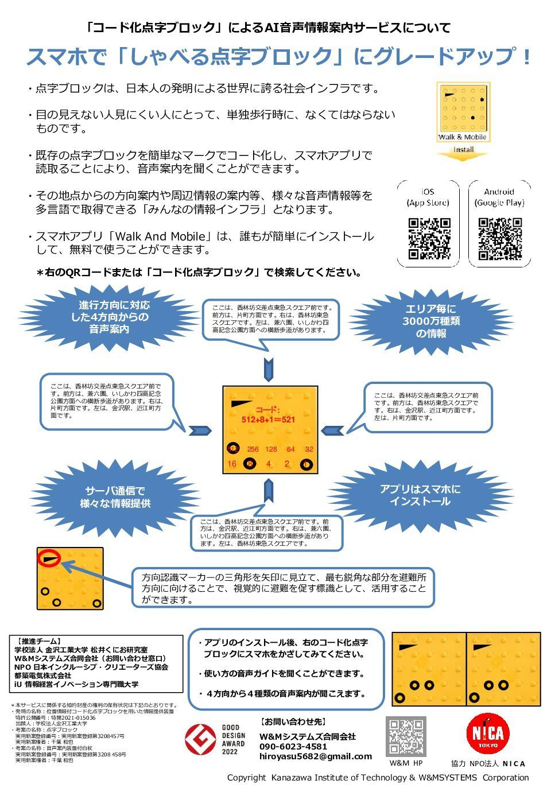
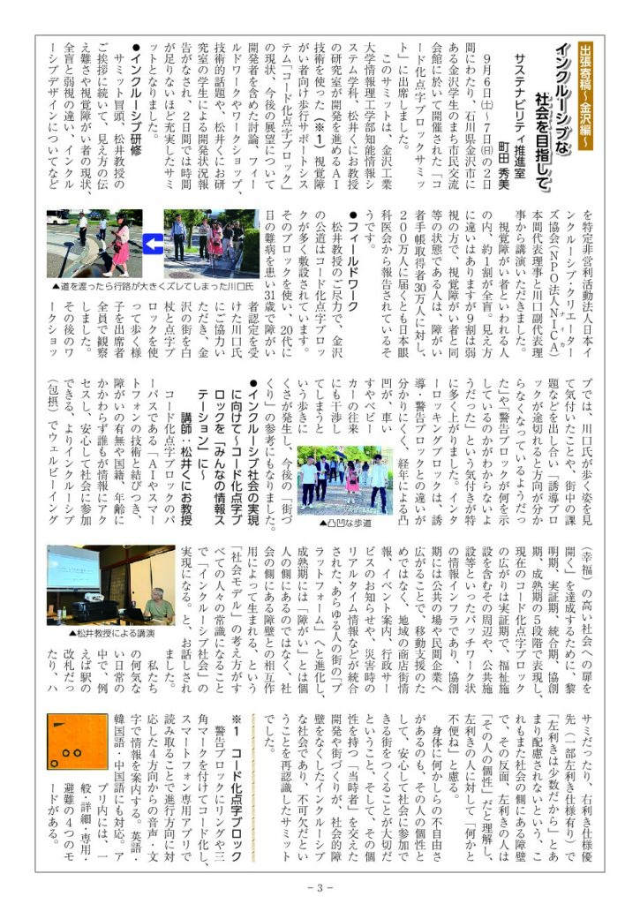

コード化点字ブロックのご紹介
既存の点字ブロックにマーキングを施し、スマートフォンで読み取ることで、今どこにいて、この先に何があるのかを音声で伝えます。
コード化点字ブロックとは
点字ブロックは、視覚障害者にとって欠かせないものですが、進めと注意の２種類の情報しか得ることができません。もっと詳しい情報を音声で提供できたら、という思いで開発されたのがコード化点字ブロックです。
その仕組みは、既存の点字ブロックにマーキングを施し、そのパターンをスマホが読み取ることで、今、どこに居て、この先に何が有るのかを音声で伝えることが可能になりました。
デザインの特徴
- マーキングのパターンの違いで、３０００万種類もの情報が提供できます。
- 直角三角形の見え方の違いで、４方向に応じた案内ができます。
- 突起部の周辺をリング状にマーキングすることで、優れた耐久性が得られます。
視覚に障害をお持ちの方ばかりではなく、この場所に不慣れな方には有効です。日本語が読めない観光客には母国語で案内するができます。
情報インフラとして、みんなが使えるコード化点字ブロックを日本中に広げたいと思っています。
コード化点字ブロックの敷設場所、他詳細は W&Mシステムズ合同会社のホームページ（外部サイト） をご覧ください。

関連ページ
メディア掲載
